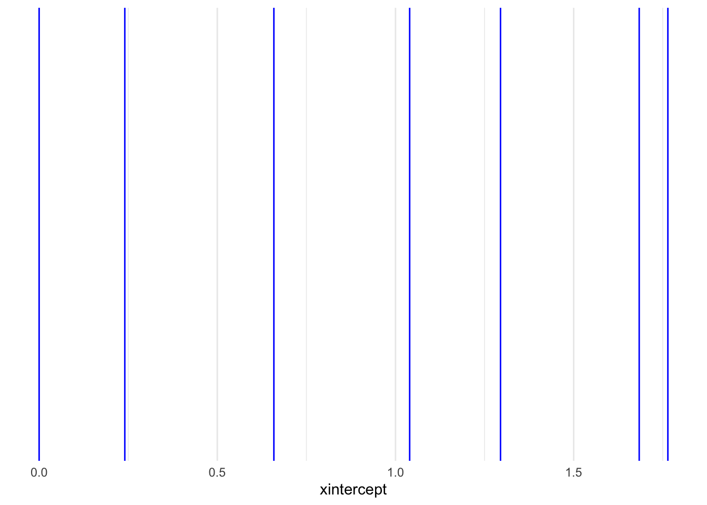
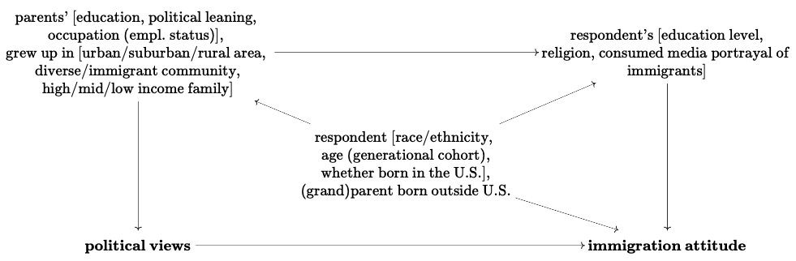
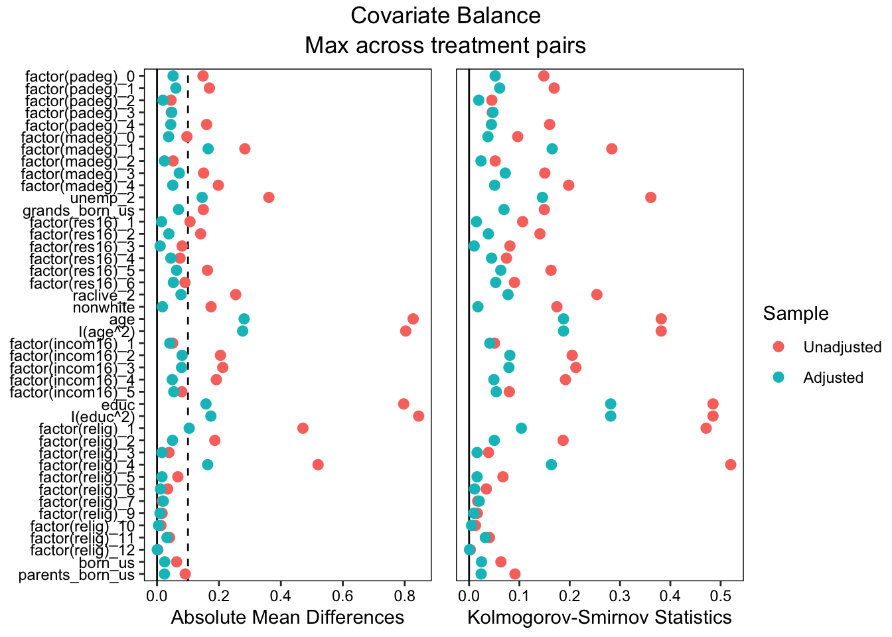

Package loaded. To attach the GSS data, type data(gss_all) at the console.
For the codebook, type data(gss_dict).
For the panel data and documentation, type e.g. data(gss_panel08_long) and data(gss_panel_doc).
For help on a specific GSS variable, type ?varname at the console.
<labelled<double>[0]>: think of self as liberal or conservative
Labels:
value label
1 extremely liberal
2 liberal
3 slightly liberal
4 moderate, middle of the road
5 slightly conservative
6 conservative
7 extremely conservative
NA(d) don't know
NA(i) iap
NA(j) I don't have a job
NA(m) dk, na, iap
NA(n) no answer
NA(p) not imputable
NA(q) not imputable
NA(r) refused
NA(s) skipped on web
NA(u) uncodeable
NA(x) not available in this release
NA(y) not available in this year
NA(z) see codebook
gss2022$letin1a[0]
<labelled<double>[0]>: number of immigrants nowadays should be
Labels:
value label
1 increased a lot
2 increased a little
3 remain the same as it is
4 reduced a little
5 reduced a lot
NA(d) don't know
NA(i) iap
NA(j) I don't have a job
NA(m) dk, na, iap
NA(n) no answer
NA(p) not imputable
NA(q) not imputable
NA(r) refused
NA(s) skipped on web
NA(u) uncodeable
NA(x) not available in this release
NA(y) not available in this year
NA(z) see codebook
Naive estimate for effect of \(T\) (family’s income at 16 years old) on \(Y\) (attitude about immigration reduction / increase):
Naively, looks like an increase of one point away from extremely liberal (1), towards extremely conservative (7) drives a .331 point movement away from immigration should be increased a lot (1) toward immigration should be reduced a lot (5).
Let’s look at the factor version of polviews, so we can see what the increase at each step is:
naive_m <-lm(letin1a ~factor(polviews), data = naive_data)tidy(naive_m)
ests <-c(0, 0.2404295, 0.6587506, 1.0397810, 1.2947305, 1.6838993, 1.7643468)# Plotting vertical lines at each estimate valueggplot() +geom_vline(xintercept = ests, color ="blue") +theme_minimal()

Hmm. Kind of.
9.1.2
Think of possible confounding variables that might affect this estimate.
Draw a DAG

What is your estimand (ATE, ATT, ATU)?
ATE. We infer that all people are at least a little “treated” by their given political attitudes, and that this has some generalized “treatment effect” on attitudes towards immigration.
9.1.3
Select the appropriate covariates in the GSS that allow for causal identification.
Make a note of any transformations.
Parents’ education
PADEG, MADEG
Parents / grandparents born in US
Binarized, 0 if one of the parents was not: PABORN/ MABORN
Binarized, 0 if one of the grandparents was not: GRANBORN
Grew up in urban, suburban, or rural area
RES16
Grew up in diverse / immigrant community
Instead, using current racial composition of neighborhood: RACLIVE
Grew up in high / mid / low income family
INCOM16
Respondent’s race
Binarized, 1 if nonwhite: RACE
Respondent’s age
AGE
Respondent’s political leaning
POLVIEWS
Respondent’s education level
EDUC
Respondent experienced unemployment
UNEMP
Respondent’s religion
RELIG
Respondent born in the US
Binarized, 0 if not born in the US: BORN
Are there any variables missing from the DAG you drew earlier?
I couldn’t find a proxy for:
parents’ political leaning
Clean variable for parents experiencing unemployment. Decided to use respondent unemployment instead, as also seems relavent
R’s media consumption / the portrayal of immigrants therein
Whether area R grew up in was diverse / immigrant community, so using self-reported diversity of current community because it also seems relavent
Warning: The `polviews` variable is treated as a categorical (factor) variable,
but the original data is of class haven_labelled. It is safer and faster
to convert such variables to factor before fitting the model and calling
a `marginaleffects` function.
This warning appears once per session.
Warning: Standardized mean differences and raw mean differences are present in the same plot.
Use the `stars` argument to distinguish between them and appropriately label the x-axis.

cbps_est_naive <-lm(letin1a ~ polviews, data = d_r, weights = cbps_weights$weights)cbps_est_naive_factor <-lm(letin1a ~factor(polviews), data = d_r, weights = cbps_weights$weights)tidy(cbps_est_naive, conf.int =TRUE)
“Write 3-5 paragraphs explaining your research question, the methods you used, and the answer you came up with.”
In this homework, I set out to find the impact of political leaning on immigration attitudes. To do this, I used data from the 2022 GSS, and adjusted for the impacts of potential confounding variables using weighting and regression. My hypothesis at the outset was that more conservative political attitudes would be associated with less enthusiasm towards immigration, and this was measurably true here.
The most apt treatment variable available was POLVIEWS, which allows respondents to self-report political inclination on a scale of 1 to 7, where 1 is extremely liberal, 4 is moderate, and 7 is extremely conservative. The outcome variable that fit best was LETIN1A, a 1 to 5 scale which captures respondents’ opinion on how the amount of immigration to the U.S. should change, where 1 is increase a lot, 3 is remain the same, and 5 is reduce a lot. A naive estimate given by a linear regression found that generally, every increase of 1 point in POLVIEWS (read, toward conservatism) resulted in a .331 point increase in LETIN1A (read, toward a immigration reduction stance).
I created a DAG to represent the potential confounding variables. I hoped to capture information about the respondents’ upbringing and current circumstances that would potentially impact their political leaning and / or their attitudes about immigration. This included variables related to family immigration history, childhood living circumstances, diversity of living area, education and income levels, race and ethnicity, and age (to capture generational cohort effects). The full list of variables selected to capture these factors is above.
Weights generated by the CBPS method in the WeightIt package allowed us to reduce the bias introduced by selection effects, and combination with a regression model over the selected confounders led to a more robust estimate of the relationship between POLVIEWS and LETIN1A. With weighting and correction, we find a .253 increase in LETIN1A for every 1 point increase in POLVIEWS, when POLVIEWS is viewed as continuous. However, allowing our analysis to be ordinal by using the factor version of POLVIEWS, we can see the more granular relative increase in LETIN1A for each value of POLVIEWS (see last output above). Across all analyses, and after correction for potential bias, the hypothesized positive relationship between conservatism and less enthusiasm towards immigration to the U.S. held.